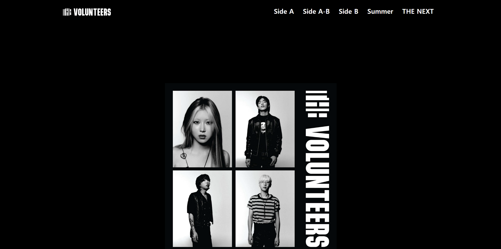
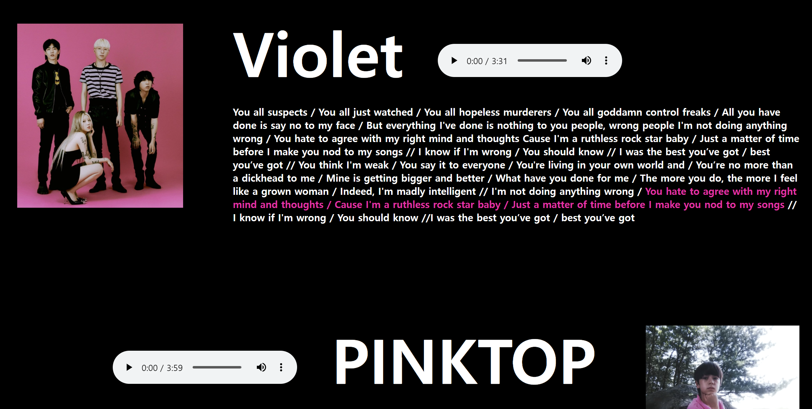
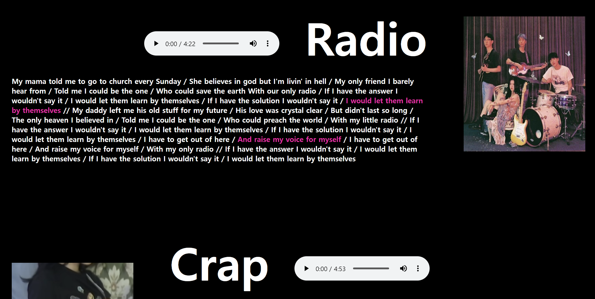
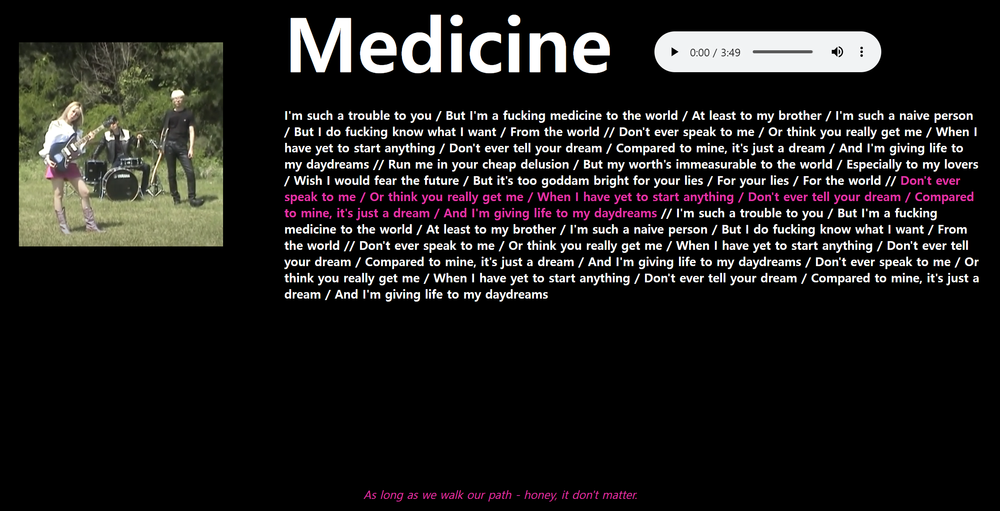
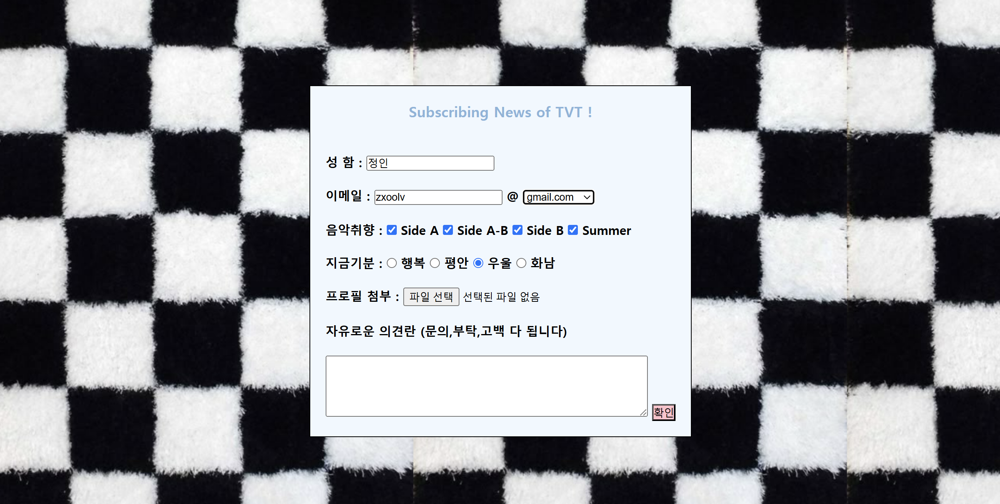

The Volunteers 1집 웹사이트 | 웹퍼블리싱 중간 과제로, 밴드 발룬티어스의 정규 1집 청취 사이트를 제작했습니다 |
|---|
아카이빙 코멘트
웹퍼블리싱 중간 과제로, 처음 배운 CSS/HTML 코드를 이용해 제가 좋아하는 밴드 발룬티어스의 정규 1집 청취 사이트를 제작했습니다.
인트로 페이지엔 코드로 메인화면과 이어진 뮤직비디오를 배경으로 넣고 플레잉 버튼을 중앙에 삽입해 사용자가 버튼을 클릭해 들어가도록 유도했습니다. 전체 페이지의 경우, 헤더 왼편에 로고, 오른편에 트랙리스트 순으로 GNB를 배치했고 바디 상단에 앨범 사진을, 푸터엔 밴드 로고를 배치했습니다. 그리고 메뉴를 순서대로 클릭하며 트랙리스트를 순서대로 들을 수 있도록 했고, 마지막 메뉴엔 다른 앨범들과 코멘트를 적을 수 있는 특별한 페이지를 추가했습니다.
평소 좋아하는 음악을 다루어 과제를 한 탓에 재밌게 만들었던 기억이 있습니다. 다만, 영상과 음악을 많이 넣다 보니 용량이 너무 커져 깃허브 페이지를 도출하며 어려움을 겪었는데, 그 덕에 페이지 도출 오류를 다룰 수 있는 지식을 얻게 되었습니다!
|  |  |
|  |  |
 |
 |